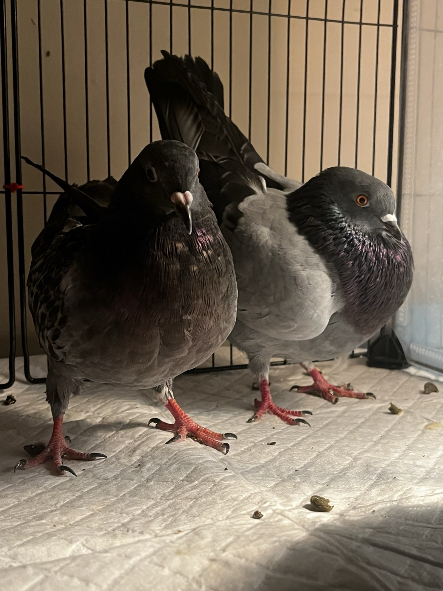

Ready to be adopted!
Brute and Zipporah (previously named Ranch) had a budding love here at SCPR, and their starts here were not so lucky... But a once tiny Zipporah had become a blossoming young hen, and Zipporah gave him her heart and Brute gave her his.
Brute was found in January 2026 with a broken wing, unable to fly, but a feisty personality to go alongside it. Regardless, he remains to be one of our well loved rescues, defending his space with enough spice to make anybody back off. Since he was found as a feral, we assume he is less than 2 to 3 years old. His broken wing had calloused over before it could be stabilized, leading to some difficulties flying, but otherwise healthy!
Zipporah was found as a baby, roughly a week old, and her finder was unable to put her back into her nest. She came to us and was named "Ranch" (and is now called Zipporah after being renamed by a previous home). Zip was raised by a pair of personal pet birds here at SCPR, and grew into a beautiful hen who fell in love with Brute soon after puberty. As of the end of November 2026, she is ~4 months old.
